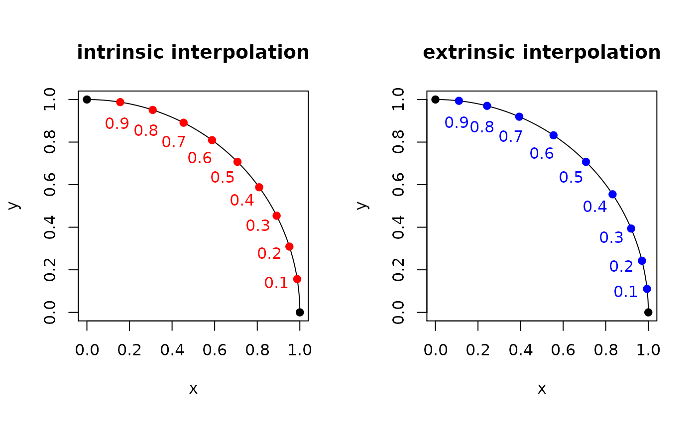

Given 2 observations \(X_1, X_2 \in \mathcal{M}\), find the interpolated points of a geodesic \(\gamma(t)\) for \(t \in (0,1)\) which assumes two endpoints \(\gamma(0)=X_1\) and \(\gamma(1)=X_2\).
riem.interps( riemobj, vect = c(0.25, 0.5, 0.75), geometry = c("intrinsic", "extrinsic") )
| riemobj | a S3 |
|---|---|
| vect | a length-\(T\) vector in \((0,1)\) for which the interpolations are taken. |
| geometry | (case-insensitive) name of geometry; either geodesic ( |
a 3d array where \(T\) slices along 3rd dimension are interpolated objects in matrix representation.
#------------------------------------------------------------------- # Geodesic Interpolation between (1,0) and (0,1) in S^1 #------------------------------------------------------------------- ## PREPARE DATA sp.start = c(1,0) sp.end = c(0,1) sp.data = wrap.sphere(rbind(sp.start, sp.end)) ## FIND THE INTERPOLATED POINT AT FOR t=0.1, 0.2, ..., 0.9. myvect = seq(from=0.1, to=0.9, by=0.1) geo.int = riem.interps(sp.data, vect=myvect, geometry="intrinsic") geo.ext = riem.interps(sp.data, vect=myvect, geometry="extrinsic") geo.int = matrix(geo.int, byrow=TRUE, ncol=2) # re-arrange for plotting geo.ext = matrix(geo.ext, byrow=TRUE, ncol=2) ## VISUALIZE # Prepare Lines and Points thetas = seq(from=0, to=pi/2, length.out=100) quarter = cbind(cos(thetas), sin(thetas)) pts.int = rbind(sp.start, geo.int, sp.end) pts.ext = rbind(sp.start, geo.ext, sp.end) col.int = c("black", rep("red",9), "black") col.ext = c("black", rep("blue",9), "black") # Draw opar <- par(no.readonly=TRUE) par(mfrow=c(1,2), pty="s") plot(quarter, main="intrinsic interpolation", # intrinsic geodesic xlab="x", ylab="y", type="l") points(pts.int, col=col.int, pch=19) for (i in 1:9){ text(geo.int[i,1]*0.9, geo.int[i,2]*0.9, paste0(round(i/10,2)), col="red") } plot(quarter, main="extrinsic interpolation", # intrinsic geodesic xlab="x", ylab="y", type="l")par(opar)